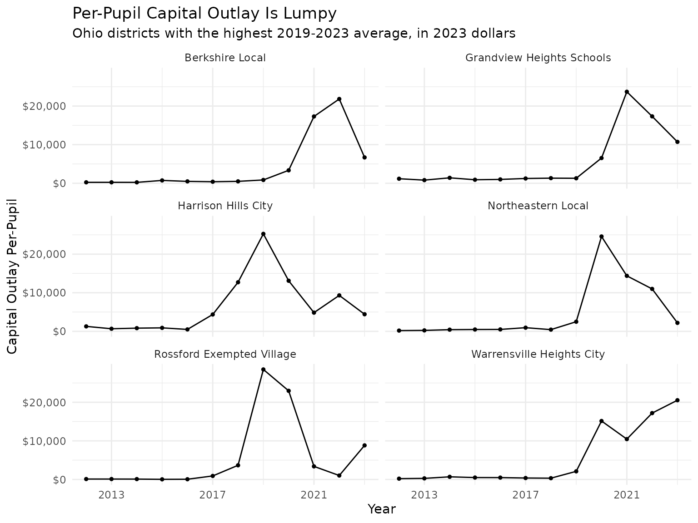
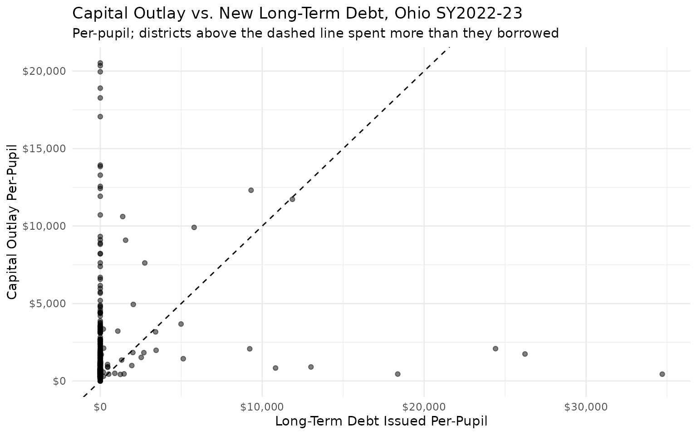
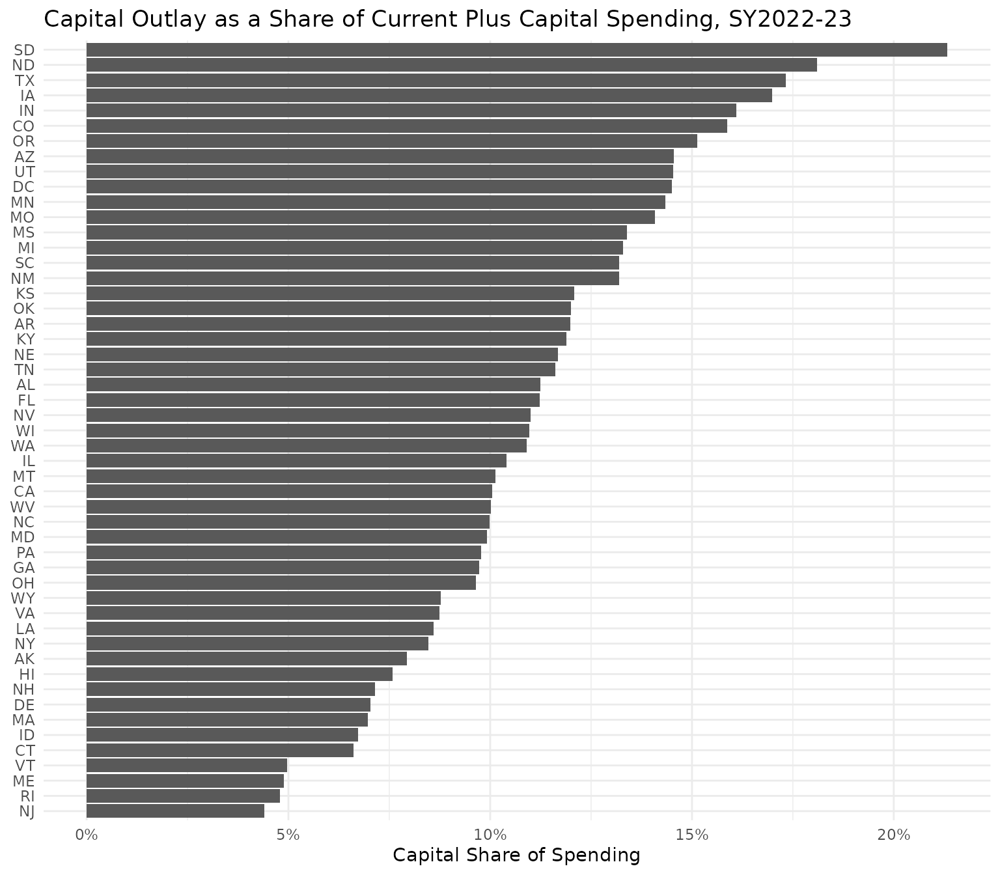

Introduction
Beyond current operating spending, the F-33 survey reports how
districts fund and build their facilities. edfinr exposes
these as a set of capital, debt, and fund-balance variables aimed at
analysts working on school facilities.
The skinny dataset includes total capital outlay in dollars and
per-pupil terms (exp_cap_total,
exp_cap_total_pp). The full dataset adds
the detailed components and the debt/fund-balance picture:
-
Capital outlay components:
exp_cap_construction,exp_cap_land,exp_cap_equip_instr,exp_cap_equip_other,exp_cap_equip_nonspec. -
Debt service:
exp_debt_interest(interest only). -
Debt stocks:
debt_lt_begin,debt_lt_issued,debt_lt_retired,debt_lt_end,debt_st_begin,debt_st_end. -
Fund balances (fiscal year end):
fund_bal_debt_svc,fund_bal_bond,fund_bal_other.
Use list_variables("full", category = "debt") to see the
debt and fund-balance entries, and
list_variables("full", category = "expenditure") for the
capital outlay items.
Important caveats
Read these before ranking or comparing districts on capital spending.
-
Capital is not current spending. Capital outlay is
excluded from
exp_cur_totalby definition. Do not add it to current spending to get a “total” without knowing what you are combining. -
Capital is lumpy. A district that builds a school
records a large
exp_cap_total_ppin one year and near-zero in the surrounding years. Single-year per-pupil capital rankings are misleading; use 3-5 year averages instead. -
Compare per-pupil, not totals. Raw dollar rankings
mostly rank district size. Only
exp_cap_total_ppships as a per-pupil column; divide the debt and fund-balance variables byenrollyourself, as the examples below do. -
Bond-funded vs. pay-as-you-go. High capital outlay
may be financed by borrowing rather than current resources. Read
debt_lt_issuedandfund_bal_bondalongside the outlay flows to understand how construction was paid for. -
Interest, not principal.
exp_debt_interestis interest only. Principal retirement (debt_lt_retired) is repayment of a liability, not an expenditure. -
Interplay with the state-revenue adjustment. edfinr
nets state capital and debt aid out of
rev_state; that netted-out amount ships asrev_state_cap_debt, the pre-adjustment value is preserved inrev_state_unadj/rev_state_unadj_pp, andc11_spike_flagflags district-years where that adjustment spikes. Consider these when relating revenue to capital activity. -
NAis not zero. A missing capital, debt, or fund-balance value means the item was not reported, not that the district spent or owed nothing. -
Stocks stay nominal. Debt and fund-balance
stocks (
debt_*,fund_bal_*) are balance-sheet levels and are never CPI-adjusted, even when you passcpi_adj. Capital outlay flows andexp_debt_interestare adjusted.
Worked example: multi-year average capital per pupil
Because capital is lumpy, average it over several years. Here we pull the full Ohio panel in 2023 dollars, then average per-pupil capital outlay over the five most recent years, keeping districts with at least three years of data and at least 1,000 students (very small districts produce extreme per-pupil values from modest projects). Window length is a tradeoff: longer windows smooth more of the project cycle but blur recent changes and mix in years with different enrollment, which is why the caveats recommend 3-5 years rather than more.
oh <- get_finance_data(
yr = "2012:2023", geo = "OH",
dataset_type = "full", cpi_adj = "2023"
)
# group by ncesid, not dist_name: names can change across years
# (e.g. "Grandview Heights City" became "Grandview Heights Schools" in 2015),
# so we keep the most recent name as the label
cap_multiyear <- oh |>
filter(year >= 2019) |>
group_by(ncesid) |>
summarize(
dist_name = dist_name[which.max(year)],
n_years = sum(!is.na(exp_cap_total_pp)),
avg_cap_pp = mean(exp_cap_total_pp, na.rm = TRUE),
avg_enroll = mean(enroll, na.rm = TRUE),
.groups = "drop"
) |>
filter(n_years >= 3, avg_enroll >= 1000) |>
arrange(desc(avg_cap_pp))
head(cap_multiyear, 10)## # A tibble: 10 × 5
## ncesid dist_name n_years avg_cap_pp avg_enroll
## <chr> <chr> <int> <dbl> <dbl>
## 1 3904500 Warrensville Heights City 5 13083. 1711.
## 2 3904560 Rossford Exempted Village 5 12939. 1613.
## 3 3904407 Grandview Heights Schools 5 11914. 1106
## 4 3904524 Harrison Hills City 5 11392. 1452
## 5 3904672 Northeastern Local 5 10930. 1039
## 6 3904716 Berkshire Local 5 10003. 1347.
## 7 3904493 Upper Arlington City 5 9994. 6221
## 8 3904652 Wynford Local 5 8449. 1159.
## 9 3910018 Warren Local 5 8400. 2002.
## 10 3904780 Indian Creek Local 5 8271. 1978.How lumpy is capital spending?
Plotting the full 2012-2023 series for the districts with the highest recent averages shows why single-year rankings mislead: a district’s per-pupil capital outlay can swing by thousands of dollars from one year to the next as projects start and finish.
# join on ncesid and use cap_multiyear's canonical name so a district whose
# name changed mid-panel doesn't split into two facets
oh |>
select(-dist_name) |>
inner_join(
head(cap_multiyear, 6) |> select(ncesid, dist_name),
by = "ncesid"
) |>
ggplot(aes(x = year, y = exp_cap_total_pp)) +
geom_line() +
geom_point(size = 1) +
facet_wrap(~dist_name, ncol = 2) +
scale_x_continuous(breaks = seq(2013, 2023, 4)) +
scale_y_continuous(labels = scales::label_dollar()) +
labs(
title = "Per-Pupil Capital Outlay Is Lumpy",
subtitle = "Ohio districts with the highest 2019-2023 average, in 2023 dollars",
x = "Year",
y = "Capital Outlay Per-Pupil"
) +
theme_minimal()
Worked example: how was construction paid for?
Pair the outlay flow with debt issued and the bond fund balance, all
expressed per pupil. Debt and fund balances are nominal, so this example
leaves cpi_adj at its default.
oh_2023 <- get_finance_data(yr = "2023", geo = "OH", dataset_type = "full")
cap_finance <- oh_2023 |>
filter(!is.na(exp_cap_total_pp), enroll >= 1000) |>
mutate(
debt_issued_pp = debt_lt_issued / enroll,
bond_fund_pp = fund_bal_bond / enroll
) |>
select(dist_name, enroll, exp_cap_total_pp, debt_issued_pp, bond_fund_pp)
cap_finance |>
arrange(desc(exp_cap_total_pp)) |>
head(10)## # A tibble: 10 × 5
## dist_name enroll exp_cap_total_pp debt_issued_pp bond_fund_pp
## <chr> <dbl> <dbl> <dbl> <dbl>
## 1 Warrensville Heights City 1797 20526. 0 12965.
## 2 Indian Hill Exempted Vil… 2189 20352. 0 17238.
## 3 Wickliffe City 1337 19957. 0 12508.
## 4 Logan Elm Local 1693 18903. 0 9078.
## 5 Tuscarawas Valley Local 1267 18272. 0 16560.
## 6 Liberty-Benton Local 1562 17064. 0 4357.
## 7 East Clinton Local 1227 13934. 0 6380.
## 8 Batavia Local 2430 13842. 0 5474.
## 9 Southeast Local 1243 13287. 0 32366.
## 10 Bethel Local 1868 12560. 0 2025.Districts with large per-pupil outlay and large per-pupil debt issuance are financing facilities with borrowing; those with high outlay but little new debt are more likely using current resources or accumulated bond-fund balances. Keep in mind that issuance and outlay are rarely contemporaneous: bond proceeds raised in one year fund construction over the following several, so a district drawing down a prior-year issue sits above the line without being pay-as-you-go. Plotting the two against each other still separates the financing strategies:
ggplot(cap_finance, aes(x = debt_issued_pp, y = exp_cap_total_pp)) +
geom_point(alpha = 0.5) +
geom_abline(slope = 1, intercept = 0, linetype = "dashed") +
scale_x_continuous(labels = scales::label_dollar()) +
scale_y_continuous(labels = scales::label_dollar()) +
labs(
title = "Capital Outlay vs. New Long-Term Debt, Ohio SY2022-23",
subtitle = "Per-pupil; districts above the dashed line spent more than they borrowed",
x = "Long-Term Debt Issued Per-Pupil",
y = "Capital Outlay Per-Pupil"
) +
theme_minimal()
How does capital’s share of spending vary by state?
Statewide aggregates smooth out district-level lumpiness and show how much of each state’s total K-12 spending goes to facilities. Shares are computed only from districts reporting both current and capital expenditure. Smoothing is not immunity, though: a state’s single-year share still moves with bond-program cycles and any one big-city building program, so treat the ranking below as a snapshot and pool several years before drawing conclusions about a state’s ranking.
us_2023 <- get_finance_data(yr = "2023", geo = "all", dataset_type = "full")
state_cap <- us_2023 |>
filter(!is.na(exp_cap_total), !is.na(exp_cur_total)) |>
group_by(state) |>
summarize(
cap_share = sum(exp_cap_total) / (sum(exp_cur_total) + sum(exp_cap_total)),
.groups = "drop"
)
ggplot(state_cap, aes(x = cap_share, y = reorder(state, cap_share))) +
geom_col() +
scale_x_continuous(labels = scales::label_percent(accuracy = 1)) +
labs(
title = "Capital Outlay as a Share of Current Plus Capital Spending, SY2022-23",
x = "Capital Share of Spending",
y = NULL
) +
theme_minimal()
Confirming stocks are not inflation-adjusted
cpi_adj scales the capital outlay flow but leaves the
debt stock untouched:
raw <- get_finance_data(yr = "2019", geo = "OH", dataset_type = "full")
adj <- get_finance_data(yr = "2019", geo = "OH", dataset_type = "full", cpi_adj = "2023")
# capital outlay (a flow) is scaled up to 2023 dollars
head(adj$exp_cap_total / raw$exp_cap_total, 3)## [1] 1.183272 1.183272 1.183272
# long-term debt outstanding (a stock) is identical in both
identical(adj$debt_lt_end, raw$debt_lt_end)## [1] TRUESee also
- The “CWIFT” article, if you want to compare labor costs across districts.
- The “CPI Adjustments” vignette for how flows are converted to constant dollars.
- The “Data Quality and Comparability” article for
c11_spike_flagand the state-revenue adjustment. -
list_variables("full")for the complete data dictionary.